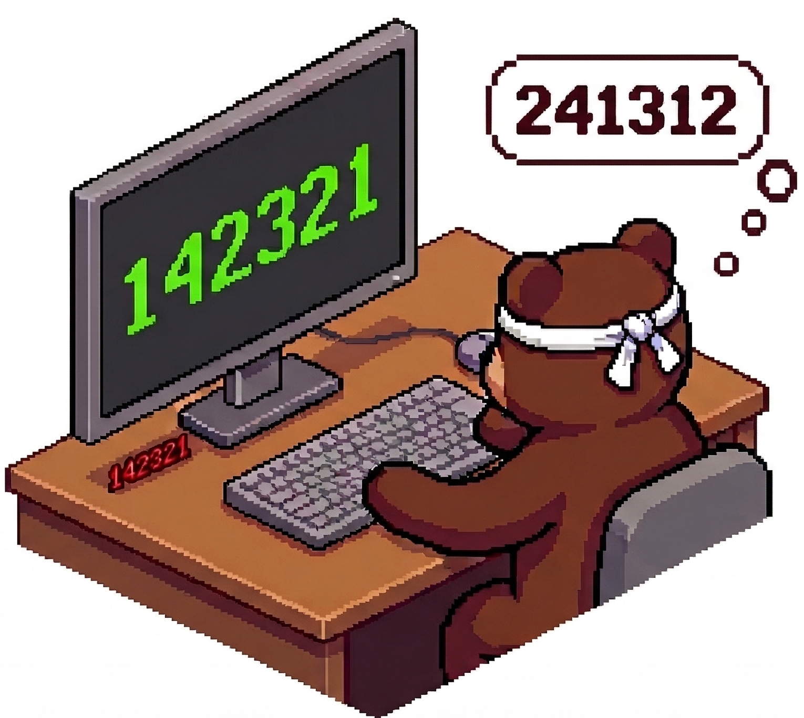

早稲田競技系プログラミングサークル WACPAC
オール早稲田
学年不問(2入もOK!)
初心者歓迎
経験者歓迎
- 新歓活動日： 4/6(月), 14(火), 22(水), 30(木) 全日 5限〜6限 (17:00 - 20:00) / 途中抜け・途中参加OK！
- 場所： 未定
- 内容： 下記掲載問題の解説・競技プログラミング体験会・競プロコンテスト(先輩とガチンコ勝負!)
WACPACからの挑戦状
ここから先の3問は、WACPACが新歓でお届けする挑戦状だ。紙とペンでも、エディタでも、好きなやり方でかかってこい。難易度(★1〜★3)は問ごとに違うから、まずは手が伸びるところからで大丈夫。
解けたら新歓で解法自慢・感想・追加のひねり、なんでも聞かせてくれ。待ってるぞ。
Q1. Distinct Sum Grid Path （・）
5×5のマス目について、左上端のマスから右または下に隣接するマスへの移動のみを繰り返して右下端のマスまで到達する経路について、経路上に含まれるマス（始点・終点を含む）に書かれた整数の総和を経路のスコアとする。
この時、すべての経路でスコアが互いに相異なるように、マス目に非負整数を書き込め。
- ★：経路のスコアの最大値が130以下
- ★★★：経路のスコアの最大値が70以下
出典: https://atcoder.jp/contests/arc214 D問題
例(条件を満たしません)
| 1 | 3 | 6 | 2 | 5 |
| 4 | 9 | 1 | 8 | 3 |
| 5 | 8 | 7 | 3 | 9 |
| 2 | 4 | 6 | 5 | 1 |
| 3 | 7 | 8 | 2 | 6 |
Score = 50
Q2. Typo 1, 2 （難易度 ）
正整数 が与えられる。正整数 に対して を、 を十進数表記にした文字列で 1 を 2 に、2 を 1 に変えた文字列を十進数として解釈した数、と定める。例えば、 である。
このとき、以下の値を求めよ。
∑x=1N f(x)
【手計算】 N = 2026
【プログラム】 N ≤ 1018 を満たす入力に対して答えを求めるプログラムを作れ
【プログラム】 N ≤ 1018 を満たす入力に対して答えを求めるプログラムを作れ

Q3. Waseda Bear's Button Mashing （難易度 ）
縦5マス、横5マスの石版があります。最初はすべてのマスに「0」が書かれています。
早稲田ベア君は「好きなタテ1列、またはヨコ1列を選んで、その列の数字をすべて＋1する」という魔法のボタンを何度でも押せます。
ボタンを連打していたところ、右の石版のようになりました。しかし、いくつかの数字が泥をかぶって見えなくなってしまいました。「？」に入る数字を当ててください。